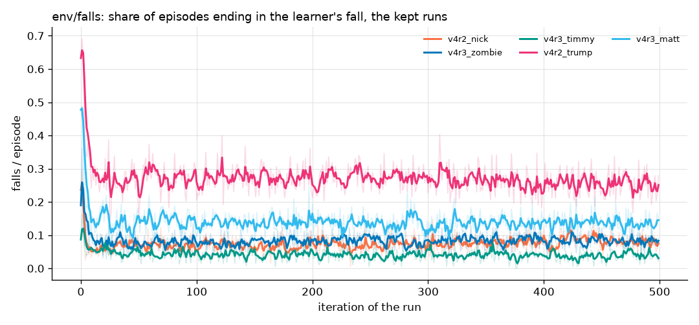
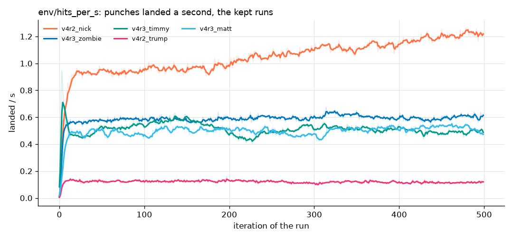
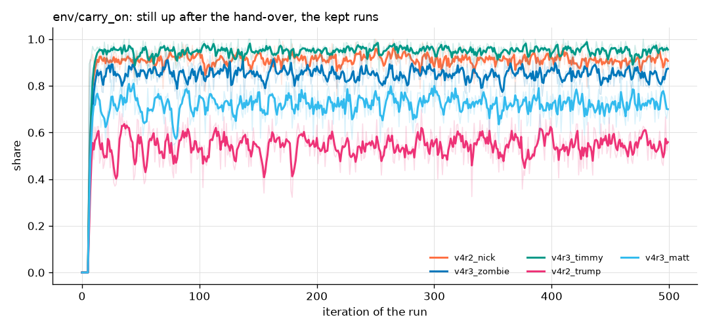

Carry-on round: nine hours on the v3 match brains
2026-11-24 22:56 to 2026-11-25 07:32 · 19 runs · RTX 5070 Ti Laptop, 3072 rings · exams in C MuJoCo (tools/exam_v2.py)
v4r2_nick), Zombie (v4r3_zombie) and Timmy (v4r3_timmy).
Trump (v4r2_trump) goes from three to five. None is in the game yet: promotion needs the editor
(PromoteBoxing, then MjParityTests and MjGateTests).
The kept brains against shipped
| Boxer | Brain | Lines | Footing (falls/min) | Attack (landed/s) | Under pressure | Carrying on |
|---|---|---|---|---|---|---|
| Nick | v4r2_nick | 6/7 (4/7) | 0.00 (0.67) | 1.87 (0.97) | 0.77 (0.02) | 23/28 (24/29) |
| Zombie | v4r3_zombie | 6/7 (5/7) | 0.00 (1.33) | 0.84 (0.79) | 0.00 (0.00) | 28/29 (29/30) |
| Timmy | v4r3_timmy | 6/7 (4/7) | 0.00 (0.33) | 0.65 (0.43) | 0.00 (0.02) | 27/30 (27/30) |
| Trump | v4r2_trump | 5/7 (3/7) | 0.00 (8.67) | 0.13 (0.16) | 0.00 (0.01) | 27/28 (23/28) |
| Matt | v4r3_matt | 4/7 (4/7) | 0.00 (0.00) | 0.49 (0.33) | 0.00 (0.00) | 22/23 (22/23) |
Shipped values in brackets. Guard, chin and getting up pass for all five, before and after. Matt's getting up (23/30) is his get-up brain, which this round did not train.
What did not work
| Boxer | Runs | Result |
|---|---|---|
| Kim | v4r_kim | Footing 3.00 to 1.67, but attack 0.41 to 0.17 even at --hit-w 2.0. Third time a gauntlet traded her punch for footing. Shipped Kim stays. |
| Soldat | v4r_soldat | 5/7 on paper because he stopped punching (0.10 to 0.00). Not a candidate; needs a different punching lesson. |
| Sokol | v4r3_sokol | 3/7 against 4/7, worse on attack and guard. Shipped Sokol stays. |
| Nick, carrying on | v4r3_nick, v4r4_nick | Stuck at 22-24 of ~29 over four rounds, also with the hand-over weighted up. Not this recipe's to fix. |
Charts
Glance
Timmy, Zombie and Nick fall in under 10% of training episodes; Trump's 25% includes knockdowns from punches, which the exam's footing line does not count.

Read
Nick's punches landed climb all run, 0.9 to 1.2 a second; the others level off near 0.5 to 0.6 within 20 iterations. Trump stays at 0.12: his short reach is the open problem (tasks.md V2).

Study
Share of hand-overs from the get-up brain that stay up. This is the line the recipe is built around. It does not track the exam: Trump stays up about 55% of the time in training but 27/28 in the exam, Nick about 92% in training but 23/28 in the exam. Training mixes in harder hand-over states from the bank; the exam uses real knockdowns.

Next
- Open the editor, promote the four candidates, run MjParityTests and MjGateTests.
- Matt's get-up brain: 23/30, one short of the mark.
- Punching for Trump, Soldat and Kim needs a new lesson, not more of this recipe.
Run-by-run detail: docs/rl_optimization_log.md, 2026-11-24 section. Queue: Training/logs/make_queue_v4r.py.